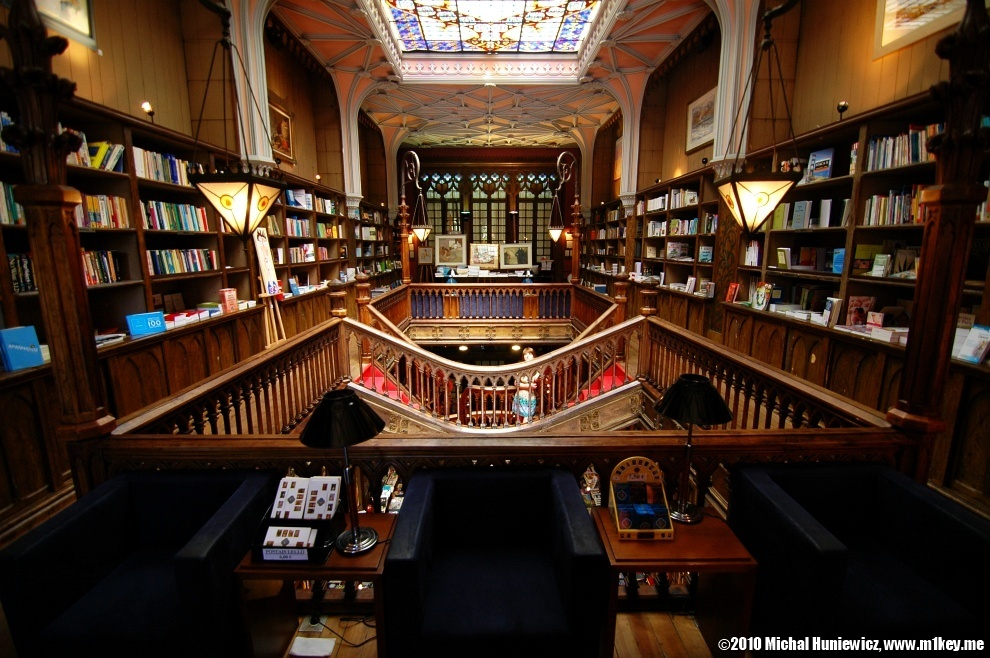

Macro Work Photography - M1key - Michal Huniewicz
The goal of this project is to create a jQuery script that will show a potentially graphic, hidden picture, when the user decides to see it.
Crane fly
Crane fly
This is a tipula oleracea. Its wingspan can reach 6cm!
Livraria Lello e Irmao
Livraria Lello e Irmao

It is from the 19th century.
I bought two books I will never read to support the bookstore.
Spider
Spider
Ew. This is a spider devouring an ant. I think it's a crab spider, but maybe not. They can change their colour, like a chameleon.
Photography-wise: the shadow shouldn't be there.